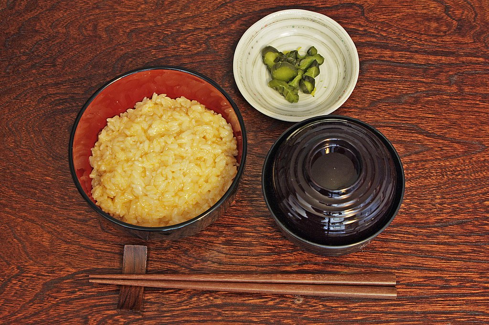

Back to menu list...
Tamago Kake Gohan
Serves one.

Source: Wikipedia
Description
Raw egg mixed with rice. Ideally, the rice cooks the egg. Mileage may vary.
Ingredients
- an egg
- rice
- optional soy sauce
- generous helping of salmonella
Method
- Place hot rice into a bowl of your choosing. The amount of rice is up to you. Get creative.
- Crack an egg atop the rice.
- Season with soy sauce if desired.
- Stir egg and rice together until thoroughly mixed.
That's it.